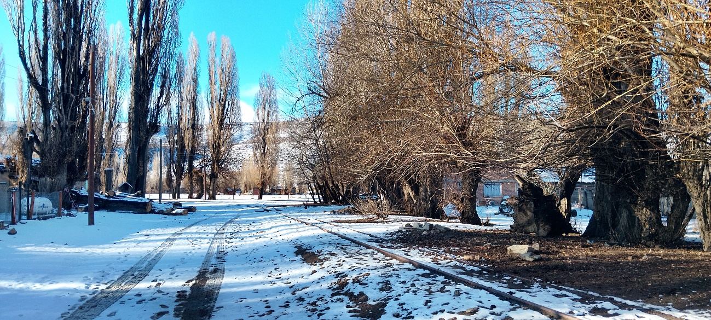
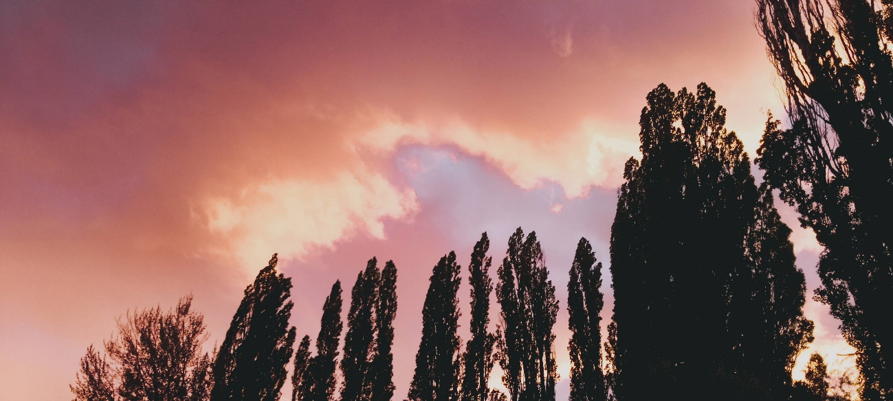
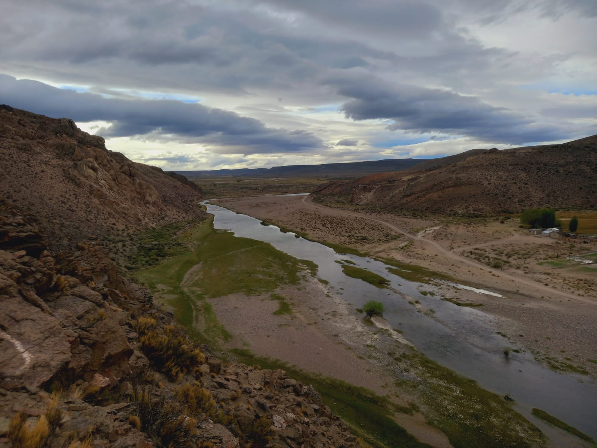
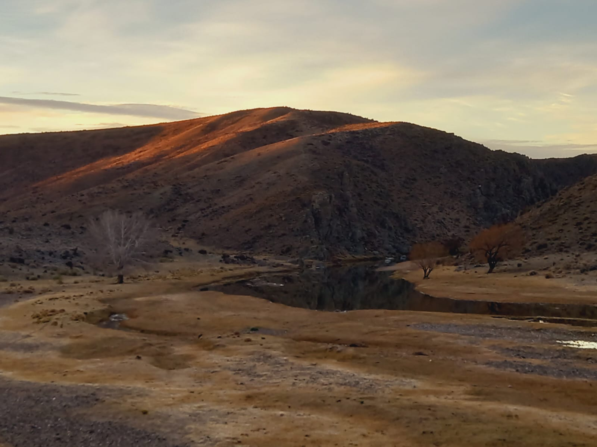
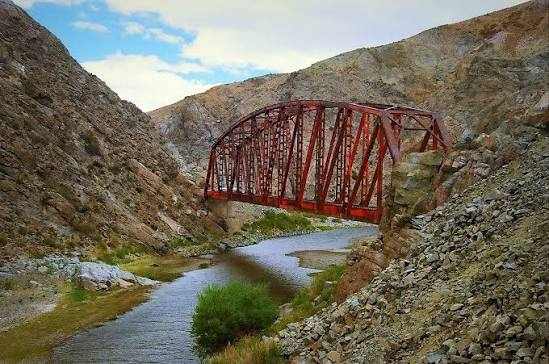
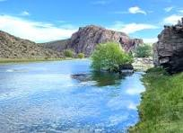

¿Alguna vez se han detenido a mirar una foto? Pero no solo un simple vistazo rápido: hay que tomarse el tiempo de fijar detenidamente cada detalle, cada cambio de tono o cada transición de color. Ver cómo en una foto puede terminar una inmensa arboleda en un cálido verde y empezar un vibrante celeste de un cielo, o cómo en una penumbrosa noche se alcanza a ver destellos de luz a lo lejos. Una simple imagen de un paisaje te puede invitar a reflexionar y, a la vez, evocar sentimientos. A continuación, les presentamos algunos ejemplos.

Podemos apreciar que, en esta fotografía, un tramo de la calle está cubierto por una fina capa de nieve, un día casi nublado que acompaña esa estética fría. ¿Cómo no querer cuidar semejante vista y paisaje?


En esta imagen se observa un río rodeado de montañas y un paisaje natural muy amplio. El lugar transmite tranquilidad y muestra la belleza de la naturaleza, siendo ideal para disfrutar del aire libre.

En esta imagen se ve un paisaje con cerros, un pequeño espejo de agua y árboles. La luz del atardecer hace que el lugar se vea muy bonito y resalta la importancia de cuidar estos espacios naturales.

La foto nos hace reflexionar sobre la importancia de cuidar el ambiente y valorar tanto los recursos naturales como las construcciones que forman parte de la historia de una comunidad. Es un lugar donde la naturaleza y el trabajo humano conviven en armonía.

Este paisaje nos recuerda la belleza y la tranquilidad que ofrece la naturaleza. El río, el pasto verde, la roca y el día soleado forman un lugar de paz que invita a detenernos, respirar y valorar el entorno que nos rodea. Cuidar estos espacios es responsabilidad de todos para que las futuras generaciones también puedan disfrutarlo.
Reflexión
Las fotografías nos permiten detener el tiempo y observar momentos que muchas veces pasan desapercibidos. Cada imagen cuenta una historia, transmite emociones y nos invita a mirar la realidad desde otra perspectiva.